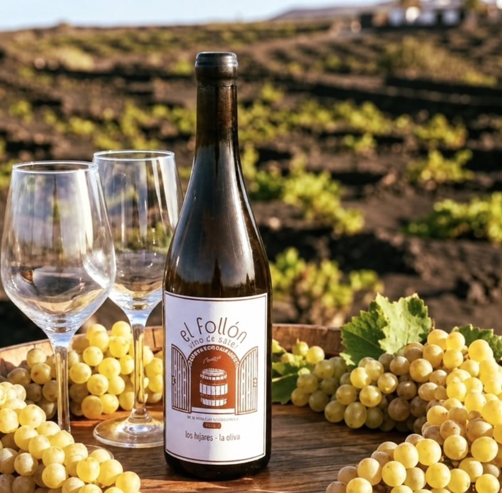
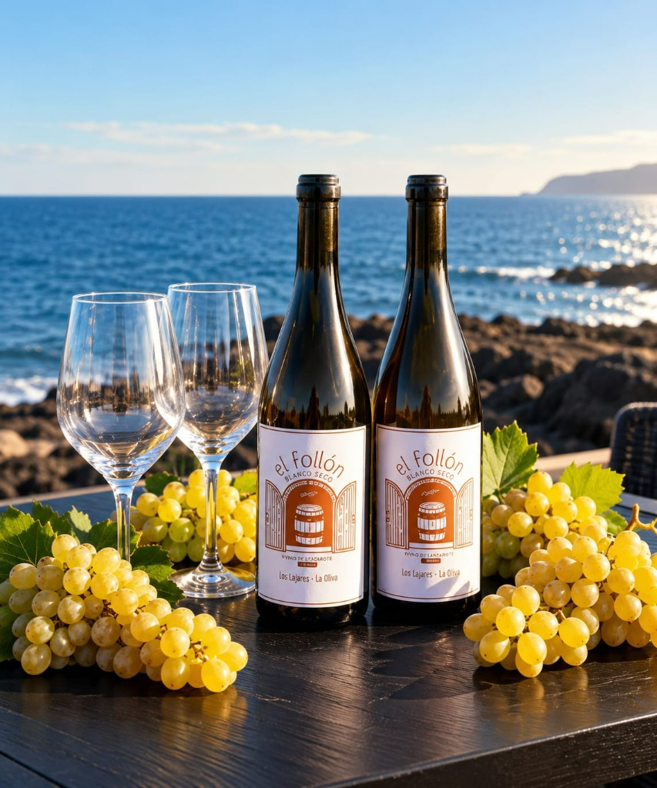

Vista
Amarillo pálido con reflejos dorados. Brillante y limpio.
Malvasía Volcánica · 2026
De Lajares. Del Atlántico. De la tierra volcánica.
Una expresión singular nacida de una cuidada selección de uva y de un trabajo minucioso en botella que le aportan armonía, profundidad y una identidad inconfundible.

Lajares · FuerteventuraOrigen
El Follón es una expresión singular de la Malvasía Volcánica procedente de una parcela de Lajares, un enclave marcado por suelos de ceniza volcánica.
Aquí, la escasez de lluvia y la influencia atlántica imprimen carácter a la uva y dan forma a un vino de personalidad propia.

Viñedo y elaboración
Notas de cata
Amarillo pálido con reflejos dorados. Brillante y limpio.
Amplio y expresivo, con fruta blanca madura, notas cítricas frescas y un toque floral. Aparecen matices sutiles de panadería fina.
Textura sedosa y envolvente, con untuosidad, frescura equilibrada y un carácter salino que avanza con amplitud y elegancia.
Persistente y largo, profundamente ligado al paisaje de Fuerteventura.
Servicio y mesa
Maridaje. Arroces marineros, quesos semicurados, cocina asiática ligera, verduras, carnes asadas y platos con matices ahumados.
Análisis
Edición limitada
Cada una de las 290 botellas resume una selección cuidada de uva y un trabajo paciente sobre lías. El resultado es un vino gastronómico, de guarda, con armonía y profundidad.
Se puede consumir hasta 2030 si se conserva en óptimas condiciones.
Una elaboración pensada para evolucionar con elegancia.